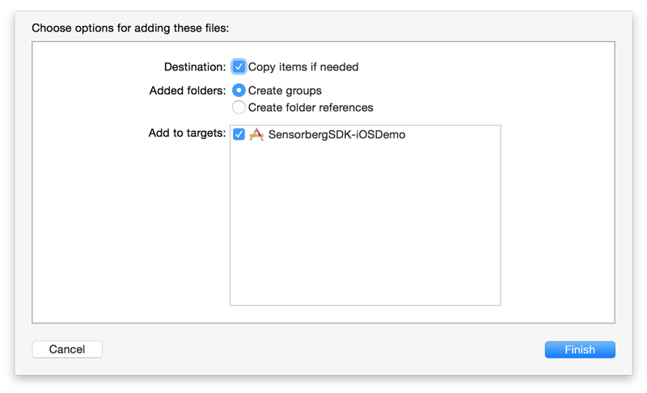
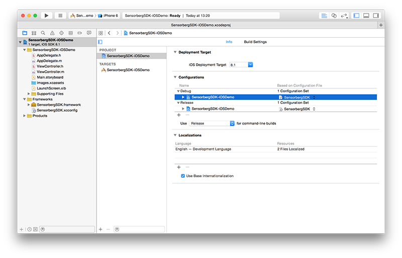
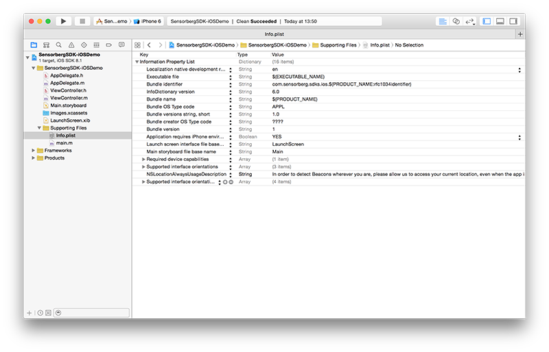

Introduction
This guide describes how to integrate the Sensorberg SDK into your iOS apps. The SDK implements support for accessing beacons that are managed via the Sensorberg Beacon Management Platform.
If you don’t want to use CocoaPods you can install the SDK manually by following these instructions.
This document contains the following sections:
Requirements
The SDK runs on devices with iOS 7.0 or higher.
Download and decompress
Download the latest Sensorberg SDK.
Decompress the file
sensorberg-ios-sdk-0.7.9.tgz.
Import into your project
Drag & drop
SensorbergSDK.frameworkas well asSensorbergSDK.xcconfigto your Xcode project. It should usually be put into a subdirectory namedFrameworks.Select
Copy items if neededinDestination.Select
Create groupsinAdded folders.Set the checkmark for your target. Then click
Finish.
Select your project in the
Project Navigator(⌘+1).Select the tab
Info.Expand
Configurations.Select
SensorbergSDK.xcconfigfor all your configurations (if you don’t already use a.xcconfigfile).
If you are already using a
.xcconfigfile, simply add the following line to it:#include "SensorbergSDK.xcconfig"(Adjust the path depending where the
.xcconfigfile is located related to the Xcode project package.)Important note: Check if you overwrite any of the build settings and add a missing
$(inherited)entry on the projects build settings level, so theSensorbergSDK.xcconfigsettings will be passed through successfully.If you are getting build warnings, then the
.xcconfigsetting wasn’t included successfully or its settings get ignored because$(inherited)is missing on project or target level.
Modify Code
- Open your
AppDelegate.hfile. Add the following line at the top of the file below your own #import statements:
#import <SensorbergSDK/SensorbergSDK.h>Modify the AppDelegate to also conform to the
SBSDKManagerDelegateprotocol.@interface AppDelegate : UIResponder <UIApplicationDelegate, SBSDKManagerDelegate>Add a property to the AppDelegate interface to be able to access an
SBSDKManagerobject.@property (nonatomic, strong) SBSDKManager *beaconManager;Open your
AppDelegate.mfile.Search for the method
application:didFinishLaunchingWithOptions:Add the following lines to request permission to display notifications on iOS 8:
#ifdef __IPHONE_8_0 if ([application respondsToSelector:@selector(registerUserNotificationSettings:)]) { UIUserNotificationSettings *notificationSettings = [UIUserNotificationSettings settingsForTypes:UIUserNotificationTypeSound|UIUserNotificationTypeAlert categories:nil]; [application registerUserNotificationSettings:notificationSettings]; } #endifAdd the following lines to bootstrap the Sensorberg SDK:
NSError *connectionError; self.beaconManager = [[SBSDKManager alloc] initWithDelegate:self]; [self.beaconManager requestAuthorization]; [self.beaconManager connectToBeaconManagementPlatformUsingApiKey:@"<API-KEY>" error:&connectionError]; if (!connectionError) { [self.beaconManager startMonitoringBeacons]; }Replace
<API-KEY>with the API key associated with your app. If you don’t know what the API key is or how to find it, please read this how-to.Open your
Info.plistand add a new key namedNSLocationAlwaysUsageDescriptionwith a meaningful description, why your application is requesting full access to the Location Services, i.e.:In order to detect Beacons wherever you are, please allow us to access your current location, even when the app is in the background.